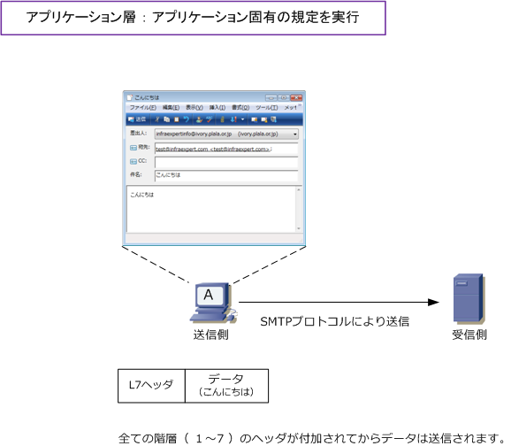
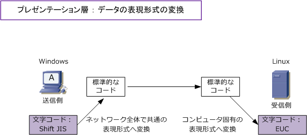
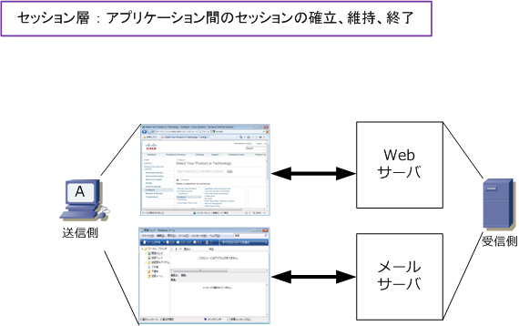
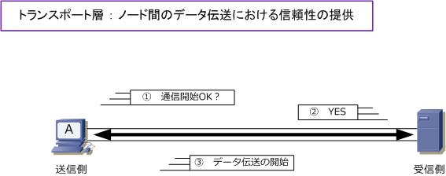
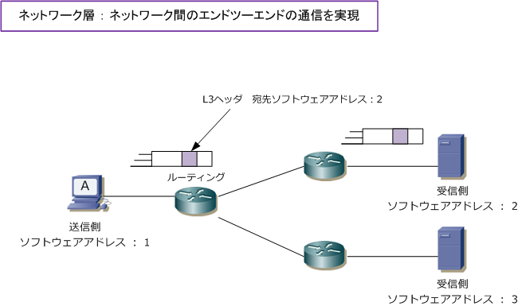
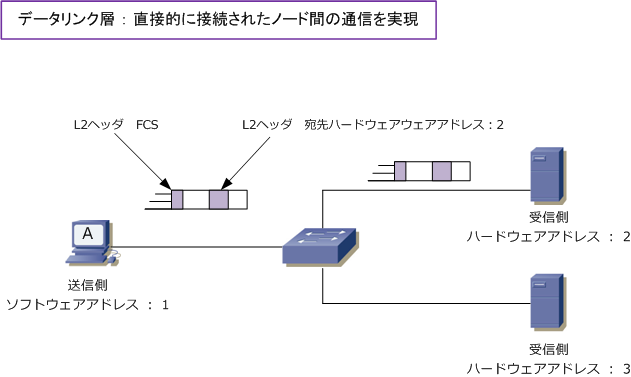
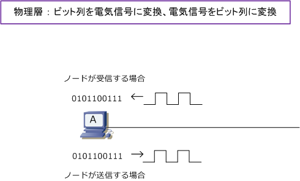

OSI reference model - Part 2
OSI参照モデル ： アプリケーション層
アプリケーション層では、利用するアプリケーションの通信サービスが実現できるよう固有の規定を定義 しています。そのため、Webページを閲覧するブラウザ、電子メールを送受信するメーラーなどこれらの アプリケーションごとにプロトコルがあります。例えばWebページの閲覧ならHTTP、電子メールの送受信 ならSMTPとPOP3というプロトコルを使用します。この層は、ユーザが直接に接する部分の層であります。
例えば、パソコンAがメールサーバに「こんにちは」というメールを送信する場合、メーラーの送信ボタン をクリックすると指定したメールアドレス宛に送信するための処理がコンピュータ上にて開始されますが、 この処理がアプリケーション層の部分です。結果「こんにちは」メッセージと一緒にアプリケーション層で 処理された内容が「ヘッダ」として付加されて下位の階層（プレゼンテーション層）にデータが渡されます。

OSI参照モデル ： プレゼンテーション層
プレゼンテーション層では圧縮方式、文字コード、データの暗号/復号などのデータの表現形式の規定を 定義しています。この層により送信側と受信側のコンピュータで使用している表現形式は異なっていても 送信側のコンピュータで「コンピュータ固有の表現形式」から「標準的な表現形式」に変換して送信して、 受信側で「コンピュータ固有の表現形式」に変換し直すことで、例えば、文字化けなしに送受信できます。
例えば「文字コード」の表現形式を考えてみます。Windows 7 で日本語の文字コードとして「Shift JIS」 を使用しているとします。一方、UNIXサーバでは文字コードとして「 EUC 」を使用しているとします。 この2つのPCが、プログラム間でデータの表現形式を何も変換しないと文字化けが発生してしまいますが 送信側コンピュータで、「標準的な形式（文字コード）」に変換してから送信すれば問題は発生しません。

OSI参照モデル ： セッション層
セッション層では、アプリケーション間でのセッションの確立、維持、終了するまでの手順を規定しています。 例えば1つのコンピュータ上でWebブラウザとメーラーを起動させて通信しているとします。セッション層で 例えば、Webブラウザで送受信しているデータをメーラーで送受信しないように、各アプリケーション同士の 論理的な経路（セッション）を制御しています。セッションが確立するとデータ転送が可能な状態になります。

OSI参照モデル ： トランスポート層
トランスポート層では、ノード間のデータ伝送における信頼性の提供とアプリケーション間でセッションを 開始する上で必要なポート番号の割り当てについて規定しています。データ伝送における信頼性を確保する ために、ノード間においてはコネクションの確立、エラー制御、フロー制御、順序制御などを行っています。
アプリケーション同士の論理的な経路をセッションと言い、ノード間における論理的な経路はコネクション と言います。コネクションはセッション上でデータ転送を行うための論理的な経路です。このコネクションは、 例えばTCPコネクションのこと。トランスポート層のプロトコルはデータ伝送における信頼性を保証するため の機能を提供していますがそれはTCPを使用する場合のことで、UDPを使用する通信では信頼性はありません。

※ セッションとコネクションを同じ意味で使用している解説もありますが、セッションとコネクションの厳密な違いは以下です。
| セッションとコネクションの違い | 説明 |
|---|---|
| セッション | セッションは、通信の開始から終了までを管理する１つの単位のことです。 例えば端末の間でセッションが確立すると、通信で使用するアプリケーションが データ転送可能な状態になります。OSI 7階層の第5層「セッション層」の機能です。 |
| コネクション | コネクションは、セッションでデータ転送を行うための論理的な回線のことです。 一般的に、OSI 7階層の第4層「トランスポート層」のTCPコネクションを指します。 |
OSI参照モデル ： ネットワーク層
ネットワーク層では、ノード間でのエンドツーエンド（ 起点から終点まで ）の通信を規定します。例えば ネットワーク層では、送信元のコンピュータからのデータをスイッチ、ルータ等の機器を経由して、宛先の コンピュータへ届けるためにソフトウェアアドレス（具体例：IPアドレス）をノードに割り当て、ルータは このソフトウェアアドレスに基づき、宛先のコンピュータまでの最適なパスを選択してデータを送信します。 ※ 宛先のコンピュータまでパケットを送信する時に、最適な経路を選択してパケット送信することをルーティングといいます。

OSI参照モデル ： データリンク層
データリンク層では1つのネットワーク回線上で直接接続されたノード同士の通信について規定しています。 データリンク層では、例えばLANではEthernetなどにより同じネットワークセグメント内におけるノード間 の通信を行っており、例えばWANでは、PPPやHDLCで隣接するネットワーク機器間の通信を行っています。
データリンク層ではLANで各ノードにハードウェアアドレス（ 例 ： MACアドレス ）を割り当て、その情報 をもとに通信を行います。また、FCSを付加することで受信フレームにエラーがないかどうかを検出できます。

OSI参照モデル ： 物理層
物理層ではネットワークの物理的な接続や伝送方式を規定しています。ノードからのデータを送信する場合は コンピュータ内部で使用している「0」と「1」のビット列を電気信号に変換しネットワークへ伝送を行います。 また、ノードがネットワークから信号を電気受信する場合は、受信した信号をノードが理解できるように信号 を「0」と「1」のビット列に変換して、コンピュータ内部に情報を取り込みます。物理層はPHYとも言います。
